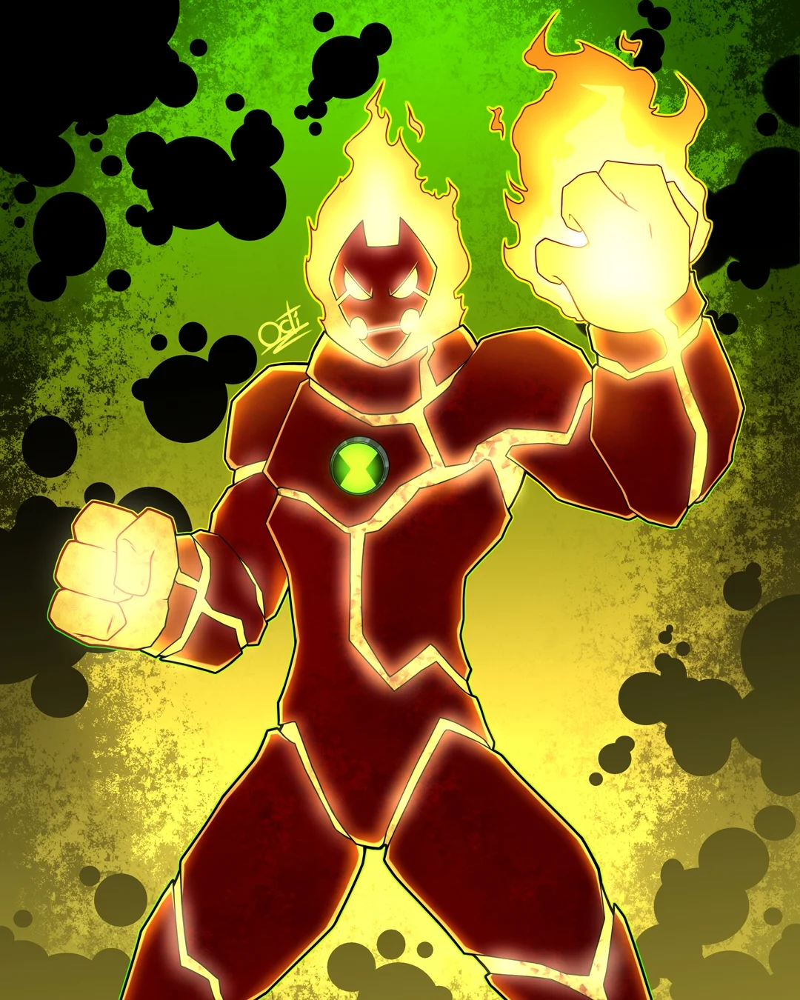
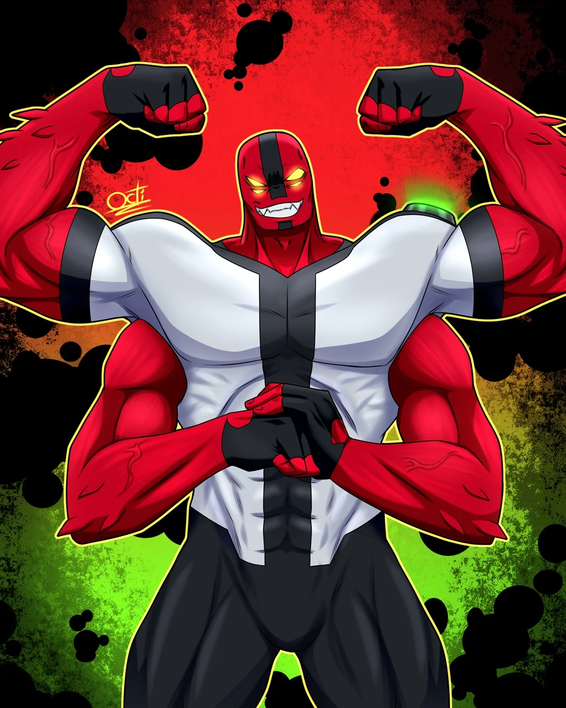
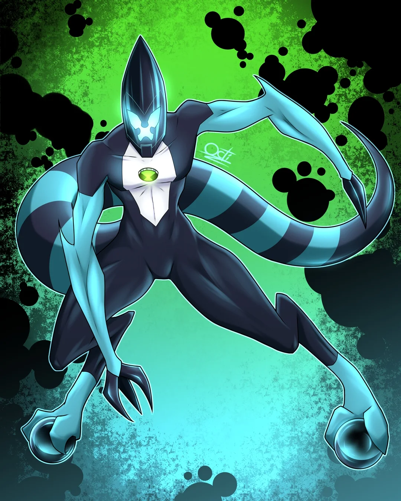
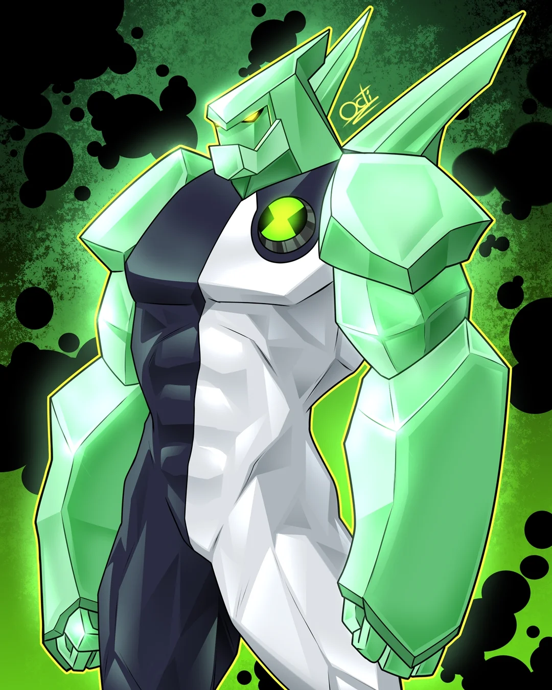
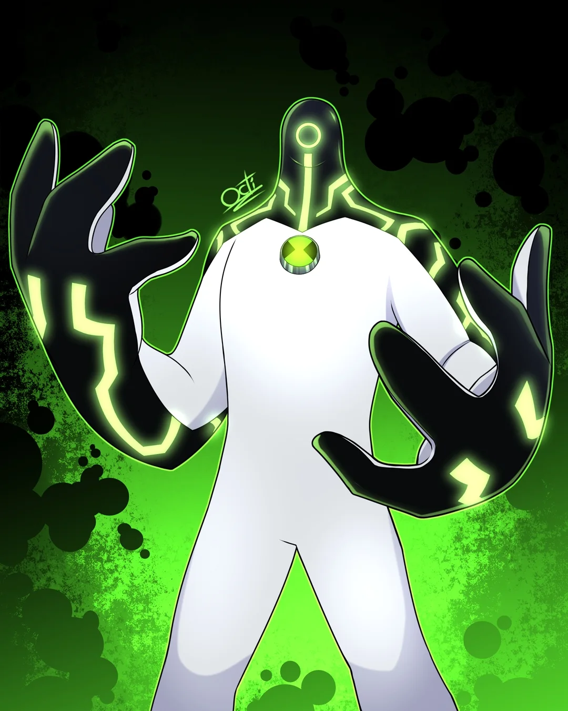
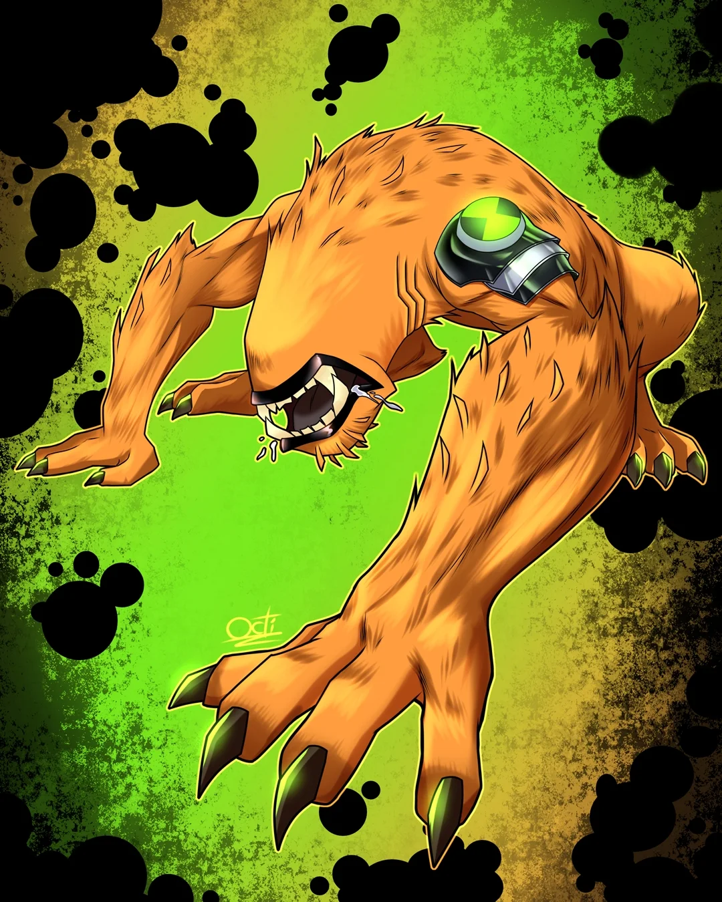
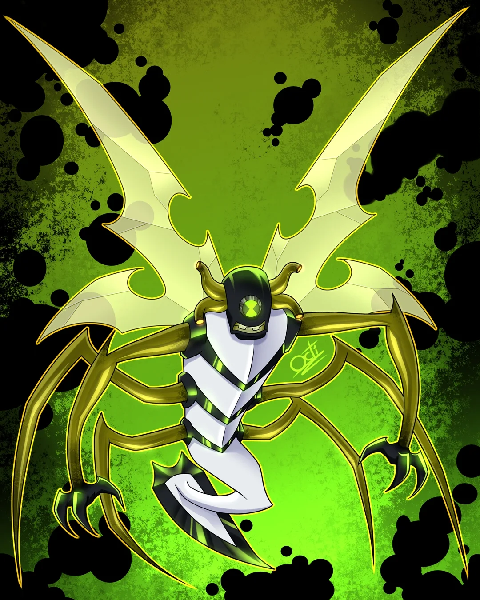
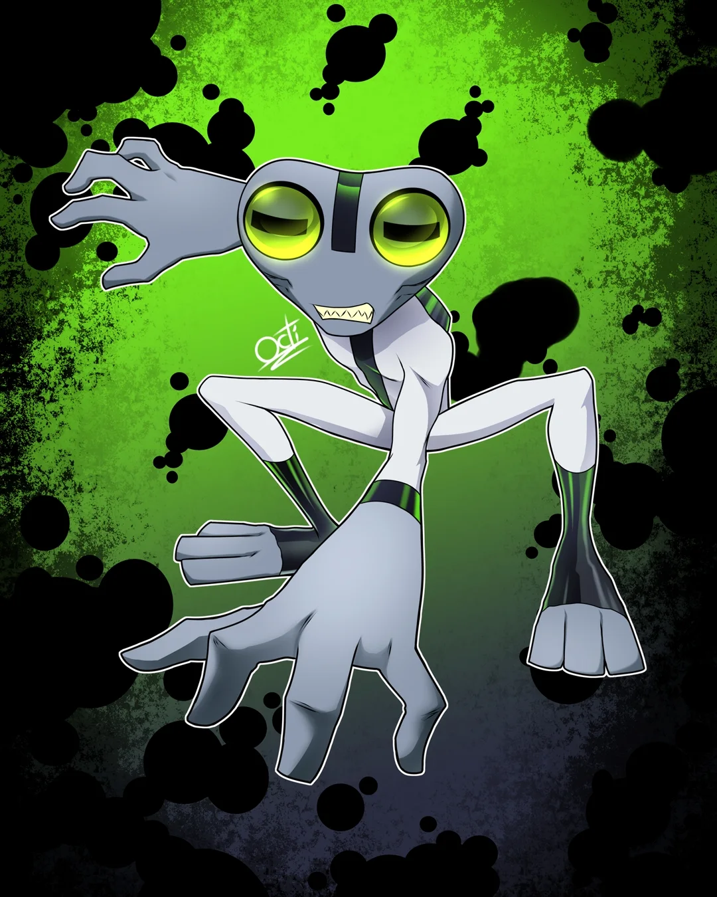
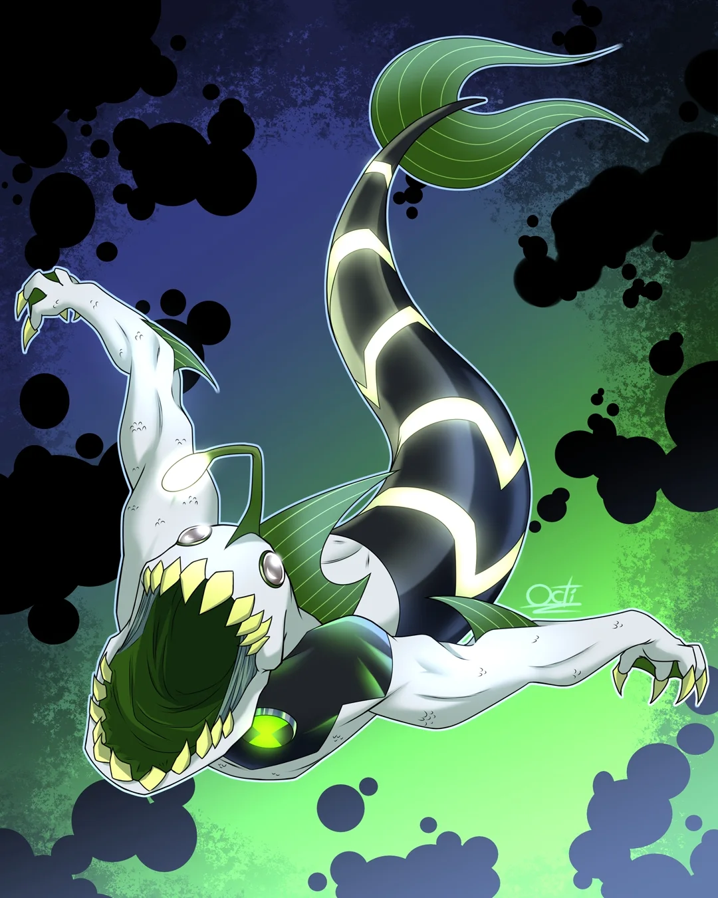
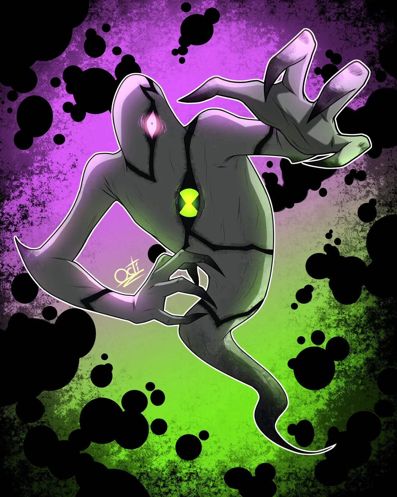

Alienígena a base de plasma capaz de proyectar ráfagas de fuego y soportar temperaturas extremas.

Posee una fuerza física sobrehumana y piel blindada resistente al impacto de armas pesadas.

Súper velocidad extrema capaz de alcanzar hasta 800 km/h y manipular la fricción del suelo.

Hecho de cristal súper resistente, puede regenerar sus extremidades, disparar proyectiles afilados y reflejar ataques de energía.

Capaz de fusionarse con cualquier tipo de tecnología para mejorarla, reconfigurarla y operarla con capacidades sobrehumanas.

Carece de ojos, pero cuenta con sentidos branquiales hiperdesarrollados en el cuello que le permiten detectar su entorno en 360 grados.

Dominante en el aire gracias a sus alas de alta frecuencia, capaz de expulsar viscosidad adhesiva y toxinas cegadoras.

De tamaño diminuto pero intellecto superior, ideal para hackear circuitos complejos, reparar dispositivos y analizar debilidades enemigas.

Especializado para el combate e infiltración submarina, posee una mandíbula con capacidad de mordida devastadora y agilidad acuática.

Posee facultades de intangibilidad, invisibilidad y levitación, permitiéndole atravesar estructuras sólidas y tomar el control de otros cuerpos.
